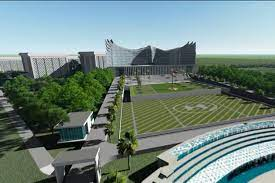

Perjalanan Kalimantan Barat Ke Timur
Pembangunan ruas jalan Nanga Era Kapuas Hulu di Kalimantan Barat dan batas Kalimantan Timur ditargetkan selesai pada 2024.
"Saat ini belum semua diaspal, kami upayakan tahun 2024 jalan menuju Kaltim tembus," kata Menteri Pekerjaan Umum dan Perumahan Rakyat (PUPR) Basuki Hadimuljono, saat berkunjung ke Rumah Betang Lunsara Hilir Kecamatan Putussibau Selatan Kapuas Hulu Kalimantan Barat, Jumat 26 November 2021.
Menurut dia, pembangunan untuk kawasan perbatasan atas permintaan Presiden Joko Widodo untuk membangun pusat ekonomi baru masyarakat mulai dari daerah pinggiran. Di Kalimantan ada 10 kawasan perbatasan yang di bangun dan lima berada di Kalimantan Barat, tiga diantaranya sudah terbangun yaitu Aruk, Entikong dan Badau 